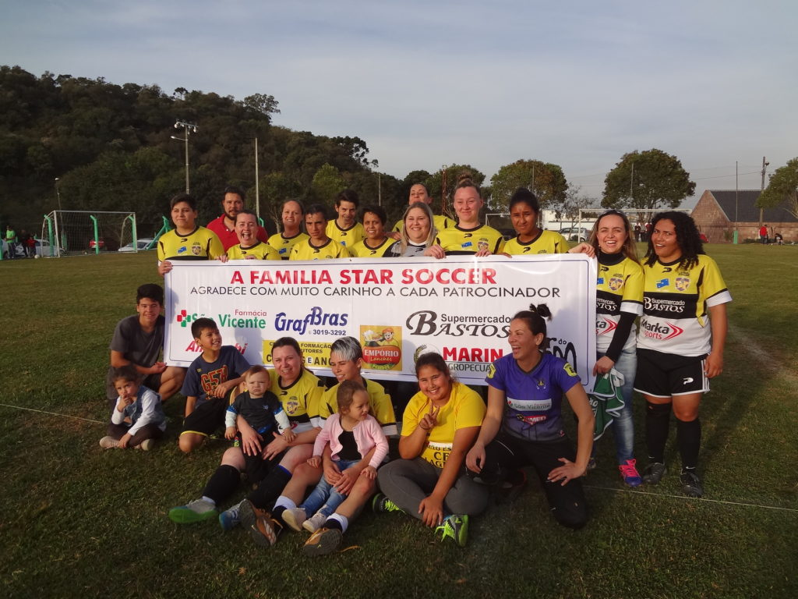

Jogando sábado a tarde no Campo do Pinheirinho tivemos a decisão do futebol suiço feminino, com jogo bem disputado, a equipe do Star Soccer foi mais competente e bateu ao Ouro Verde por três gols a um.
RESULTADOS DA 6ª DO FUTEBOL DE CAMPO 1ª DIVISÃO DO JOCOL
SABADO 08 DE JULHO 2017
CAMPO NADIR 13:30 E. C. CACHOEIRA 1 X 5 AUDAX F.C. H
CAMPO NADIR 15:00 FABRIS F.C. 1 X 6 SER SAÕ CRISTOVÃO D
CIDADE ALTA 13:30 FIGUEIRINHA JUNIOR WOXWO NOVO HORIZONTE F.C. E
CIDADE ALTA 15:00 AYMORÉ F.C. 0 X 1 S. C. INTER AMIGOS H
STA CATARINA 13:30 ATLETICO SERRANO WOX 1 NAPOLI F.C. C
STA CATARINA 15:00 REAL MADRI F.C. WOX 1 CRC HABITAÇÃO G
BEIRA – RAIA 13:30 PÁLMARES F.C. 0 X 5 E. C.VILA REAL H
BEIRA – RAIA 15:00 ASS. VILA NOVA 0 X 2 CARAVAGIO F.C. G
STA HELENA 13:30 VILA MARIA JUNIOR 0 X 1 E. C. SANTA CANDIDA F
STA HELENA 15:00 ASS. SÃO MIGUEL 7 X 1 EXP. VILA COMBONI D
ALTOS V. MARIZA 13:30 INDEPENDENTE BECO 4 X 0 SÃO JOSE F.C. B
ALTOS V. MARIZA 15:00 SÓ NOIS FC. 1 X 3 VILA MARIZA “B” B
HABITAÇÃO 13:30 AT. UNIVERSITARIO 1 X 1 CRISTAL F.C. G
HABITAÇÃO 15:00 GALATICOS F.C. 4 X 2 PASSO FUNDO F.C. A
DOMINGO 09 DE JULHO DE 2017
STA CATARINA 09:45 VERONA F.C. 2 X 5 C. AT. COPACABANA B
HABITAÇÃO 09:45 UNIÃO DA SERRA 3 X 1 LAYONS HABITAÇÃO D
CIDADE ALTA 09:45 E. C. BAHIA 1 X 2 CSA – CLUBE SANTO ANTONIO C
CIDADE ALTA 13:30 BRACATINGA NOVA HABITAÇÃO 1 X 2 ATLETICO BOEMIOS E
CIDADE ALTA 15:00 AT. STA CATARINA 2 X 4 CSK F.C. E
CAMPO NADIR 09:45 SÃO CARLOS F.C. 2 X 1 C. AT. BOCA JUNIOR D
CAMPO NADIR 13:30 UNIÃO ESPORTE CLUBE 1 X 1 BENFICA F.C. E
CAMPO NADIR 15:00 GUARANI F.C. 0 X 4 ASS BARRA AZUL C
BEIRA – RAIA 09:45 JUVENIL BLOCO 2 1 X 4 VIENA F.C. F
BEIRA – RAIA 13:30 AT. FREI ROGERIO OCEPACH 1 X 2 SANTOS F.C. A
BEIRA – RAIA 15:00 DON BALCK 0 X 3 E. C. JUVENIL C
STA HELENA 09:45 CHELSEA F.C. 3 X 2 E. C. SANTA CRUZ F
STA HELENA 13:30 ASS FREI ROGERIO 2 X 2 ESPORTE UNIÃO B
STA HELENA 15:00 ASS. LAGES WOX1 SER PALMEIRAS G
ALTOS V. MARIZA 09:45 REAL BETS F.C. 0 X 3 R. D. LA CORUÑA F
ALTOS V. MARIZA 13:30 SPORT NACIONAL JUNIOR 1 X 2 E. C. DON DANIEL H
ALTOS V. MARIZA 15:00 ROMA F.C. 0 X 1 E. C. BARCELONA A